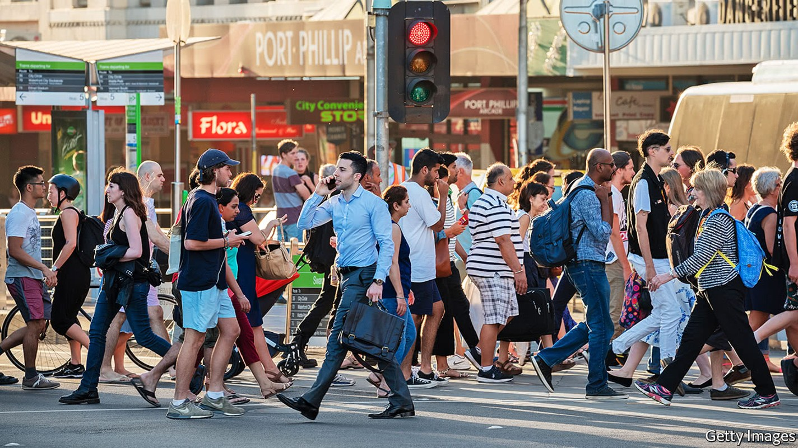
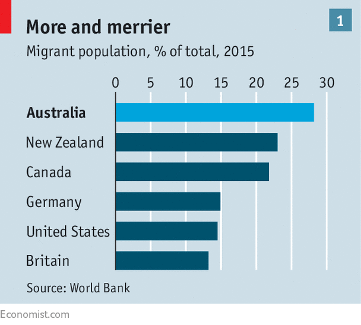
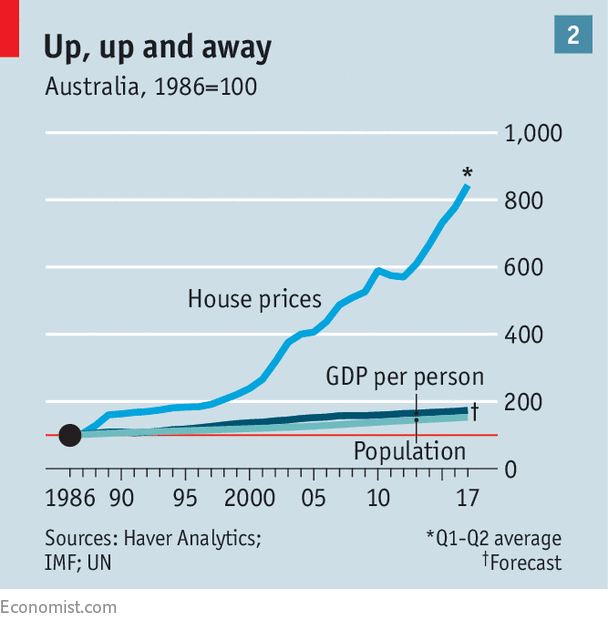

Australia admits more migrants than any other big Western country
And Australians still like them

“THE prime reason for the decline in living standards for many Australian workers is our staggering population growth,” thunders Dick Smith, a campaigning millionaire, in an apocalyptic manifesto. He is right about the staggering growth. The number of children the average Australian woman has fell below two in the 1970s and has stayed there. Yet since then Australia’s population has grown by 70%, thanks almost entirely to immigration. Over 28% of today’s residents were born overseas—a higher share than in Canada or New Zealand, let alone Britain or America (see chart 1). The number of newcomers continues to grow. Net overseas migration (a measure of immigrants minus departing Aussies) has nearly doubled since 2000.

Mr Smith is also right about the decline in living standards, albeit only recently. Wage growth has been dragging along at its lowest rate in almost 20 years, and dipped below inflation earlier this year, meaning that the typical worker is losing purchasing power. Although the unemployment rate, at 5.6%, is low by the standards of recent decades, underemployment is close to a record. Philip Lowe, the governor of the Reserve Bank of Australia, the central bank, concedes that employees “feel like there is more competition” and are worried about “foreigners and robots”.
Yet, to the frustration of alarmists like Mr Smith, relatively few Australians seem to think the way to boost their incomes is to stem the influx of immigrants. In 2015 Gallup, a pollster, found that Australia was the only big Western country where more people thought immigration should rise (30%) than thought it should fall (25%). Regular surveys conducted by the Scanlon Foundation, which works to integrate immigrants, show that the sense that immigration is too high has fallen substantially since the 1990s. Pauline Hanson, a populist senator who made her name then, warning that Australia would be “swamped” by Asians, has started fulminating about Muslims instead, to little avail. When she recently tried to stir up public opinion by wearing a burqa in parliament, she attracted more ridicule than adulation.
In part, that is because Australia has a long history of immigration, from Chinese joining the gold rushes of the 1850s and 1860s to Afghan camel drivers helping to explore the outback in the late nineteenth century. It helps, too, that the economy has been growing for 26 years without a recession, and that incomes have been growing faster than the population. In fact, immigrants have had a hand in that: a growing population consumes more goods and services. Recent immigrants have provided labour for a mining boom and, when that petered out, demand for housing and manpower to build it, helping to keep the economy ticking over. Some 600,000 foreigners spent A$20bn ($14.6bn) to attend Australian schools and universities last year, making education the country’s third-biggest export. Many take local jobs and pay taxes after they graduate.
It is true that immigration appears to have raised unemployment and lowered wages in certain industries. Bob Birrell of the Australian Population Research Institute notes that Australia’s points-based system, which is designed to attract workers with skills that are in short supply, has brought a deluge of accountants and IT professionals. Over half of foreign students study business and commerce because they believe that will give them access to high-paying jobs, he says, but they are often left on “the fringes of the labour market because it’s difficult to compete with locals”. Overall, however, Australia’s Productivity Commission finds no evidence that migrants suppress wages or displace locals from jobs. They help raise GDP per person, not lower it, in part by making Australia’s population more youthful, thus offsetting the ageing of its baby boomers.
But the surge in immigration has caused problems, most obviously in terms of planning. Theoretically, there ought to be plenty of space for the 230,000-odd yearly arrivals, since Australia is one of world’s least densely populated countries. But the vast majority of its people, and an even greater share of its immigrants, cluster in a few cities near the coast. Despite substantial investment, urban infrastructure is struggling to keep pace. Melbourne and Sydney, in particular, are pulling at the seams. Commuters are subjected to snarling traffic, the costs of which are predicted to double by 2030. The number of passengers on Sydney’s commuter trains, meanwhile, grew by 11% in the year to July.
Immigration has also stoked house prices (see chart 2). In Sydney the average home costs A$1.2m, up almost 20% in a year. By one count, the city is the world’s second-most expensive relative to incomes. The once-standard house on a quarter-acre lot is beyond the means of most. Those who do buy a home are heavily indebted: at 134%, the ratio of household debt to GDP is also one of the highest in the world. A recent analysis found that buyers in Sydney would need to make A$190,000 a year—more than triple the average salary—to repay their mortgages comfortably.

The conservative government led by Malcolm Turnbull has promised to free more land for development and penalise investors who leave properties empty. But it has also pandered a bit to the likes of Mr Smith by changing immigration rules. The prime minister said he was “putting Australians first” by requiring temporary migrants to have more work experience and better language skills. He wants would-be citizens to pass tougher language tests and prove that they share Australian “values”. Previously, new arrivals had to be able to identify Don Bradman, a celebrated cricketer (contrary to popular belief, they did not need to know his batting average). Mr Turnbull wants to be sure they frown on domestic violence and sexism. He might have added xenophobia to the list.